产品设计 · 视觉识别 · 2026
Cyma
一款发现本地独立音乐人的 App：让城市本身成为一张歌单。
01 — 问题
音乐从没这么容易获得，我们发现新音乐却越来越少。
流媒体上的歌越来越多，但听什么是算法决定的。结果是我们总在同几位歌手之间打转，独立音乐人依然被埋没，哪怕就在自己的城市里。
+100 000
首新歌每天被上传
观察
内容丰富，并不等于发现多样。
观察
推荐系统在左右我们能接触到的内容有多多样。
矛盾
音乐供给越来越丰富，听众却错过了独立音乐场景的一大部分。
设计问题
如何让「发现新音乐」重新回到我们的日常收听习惯里？
02 — 用户调研
弄清楚人们怎样发现新音乐人，又为什么没有。
我发放了一份线上听众问卷：11 道题，分三个部分，共收回 30 份回答。
5 道题
基本情况与收听习惯
- 年龄和收听频率
- 最常听的音乐类型
- 主要使用的平台
- 平台是否只偏向少数音乐人？
3 道题
痛点与意愿
- 发现新音乐人的主要障碍
- 对发现新音乐的热情，1 到 5 分
- 什么会让你想去发现一位新人音乐人
3 道题
项目设想
- 是否想发现住所附近的新人音乐人
- 愿意用哪些方式支持：现场、小额捐赠、周边、分享……
- 其他意见和期待（开放题）
问卷结果
探索性问卷，30 位 18–35 岁的受访者。其中两个结果直接影响了产品概念。
18/30
认为选择太多是发现新艺人的最大障碍。
- 选择太多18
- 没有时间15
- 推荐不准12
- 难找到优质艺人12
在 Cyma 中： 每天只推荐一位艺人，即「今日艺人」。
17/30
希望发现身边的新兴艺人，另有 8 人表示也许。
- 是17
- 也许8
- 否5
在 Cyma 中： 「你的街区」板块展示附近的艺人和演出。
目标用户
敏感型听众
好奇心强、乐于发现新音乐人和新音乐场景的听众。
- 年轻听众
- 好奇
- 每天都听
- 学生 / 上班族
- 流媒体用户
痛点
- 总觉得自己在听同样几位歌手
- 很难找到有意思的新音乐人
- 推荐内容常常不够多样
需求
- 发现新的新人音乐人
- 体验不一样的音乐现场
- 能直接支持音乐人
「我们不会因为算法而喜欢上一位音乐人，真正的联系来自亲身经历。」
指导整个项目的洞察
03 — 竞品分析
Sofar Sounds
和 Cyma 想法最接近的竞品：在小空间里办私密演出，推新人音乐人。
产品与服务
- 在特别的场地举办私密演出
- 推广新人音乐人
- 沉浸式的音乐体验
营销策略
- 围绕体验和发现做传播
- 制造惊喜：演出阵容常常保密
- 经营一个活跃的社群
优势
- 体验强烈、有辨识度
- 让新人音乐人被看见
- 本地化、有人情味
劣势
- 参与门槛高，活动不定期
- 没有完整的数字平台
- 难以规模化
Cyma 从中得到的启发
- 保留 Sofar 的长处：现场、人情味、扎根本地。
- 补上它缺的：一个全年都能发现音乐的数字平台，而不只是演出当晚。
- 依托合作酒吧网络，提供定期演出。
04 — 解决方案
Cyma 把听众、独立音乐人和附近的演出场所连在一起。
一个本地音乐发现平台，两条规则：只收录本地音乐人，且播放量不到一万。
听众
发现家附近的音乐人
独立音乐人
在本地听众中获得曝光
演出场所
承办演出，带来客流
目标用户的需求
Cyma 的回应
发现新的新人音乐人
基于距离的音乐发现平台
体验不一样的音乐现场
在合作酒吧举办的演出
能直接支持音乐人
演出预订，以及推荐他们的月刊
01
音乐发现平台
- 发现附近的音乐人
- 查找演出
- 预订
02
推广体系
- 月刊：专题、访谈、演出精选、文化日历
- 传播：社交媒体、海报
03
合作演出
- 合作酒吧
- 独立音乐人
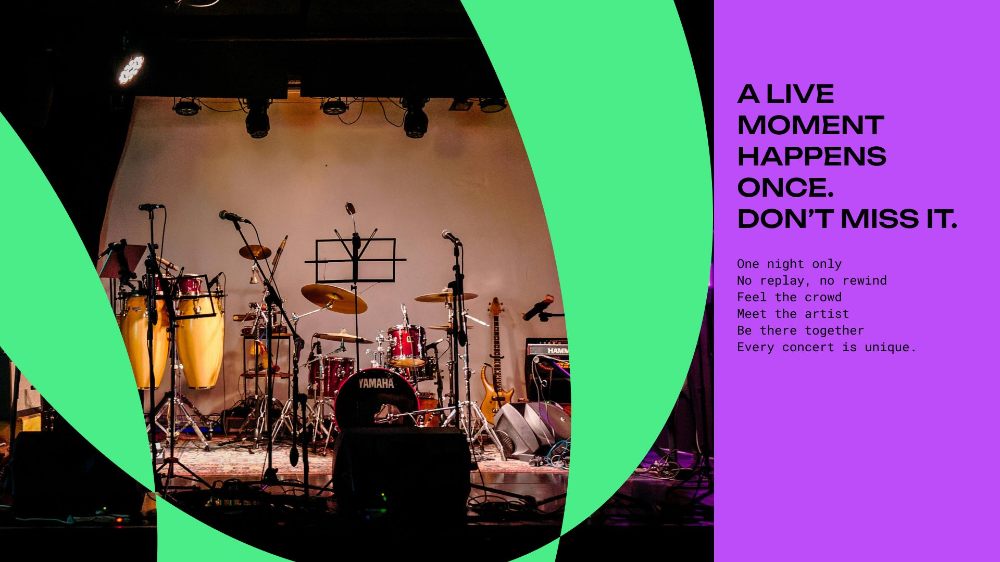
05 — 原型
三条关键流程，都可以在 Figma 原型里体验。
-
1
发现附近的音乐人
浏览本地音乐场景，试听，关注音乐人。
-
2
浏览演出
查看附近的音乐人在哪里、什么时候演出。
-
3
预订并查看门票
预订座位，在 App 里找到自己的门票。
06 — 标志
字标由三个部分构成。它在六种品牌色之间自由换色，单独抽出的 m 字符号用于 App 图标和小尺寸场景。
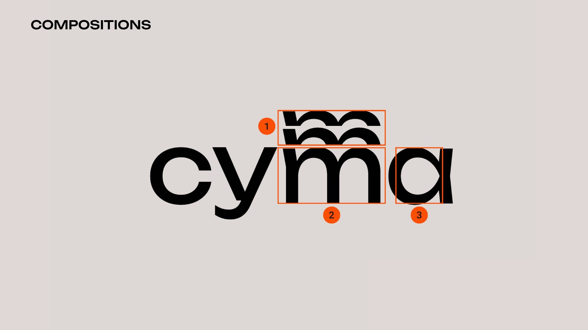
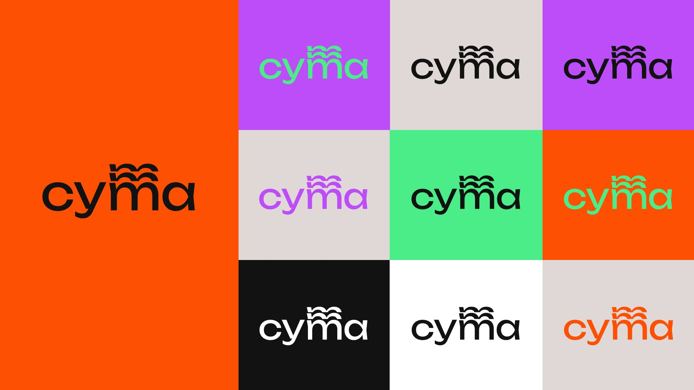
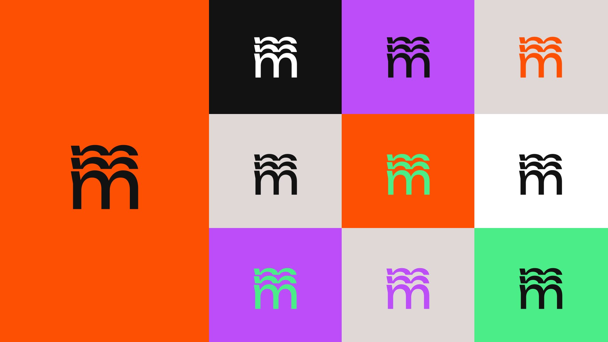
07 — 字体与色彩
两种字体分工明确：Unbounded 宽而有力，带着现场的能量，用于标题和标语；Roboto Mono 负责日期、地点和说明文字，精确、易读，像一张演出单。
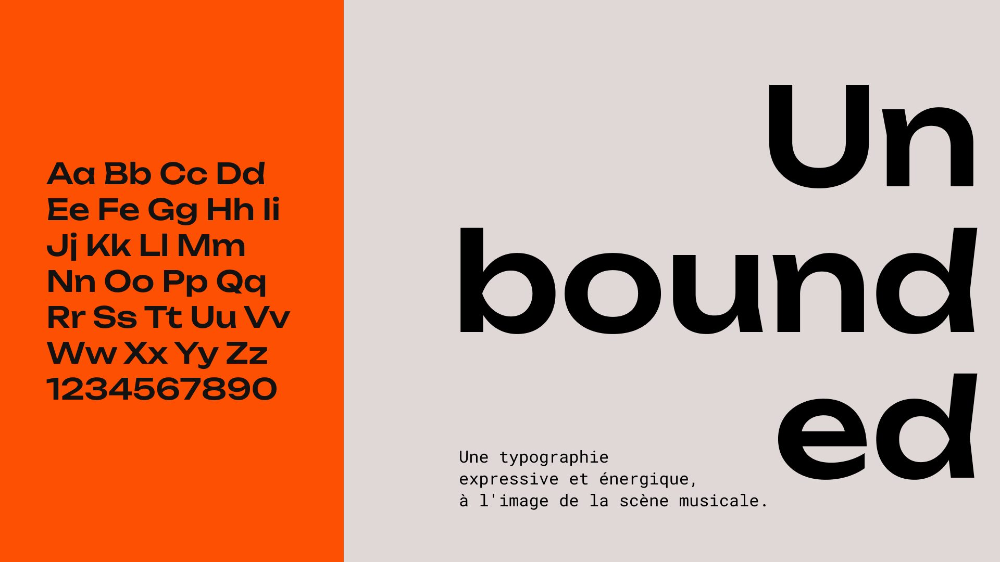
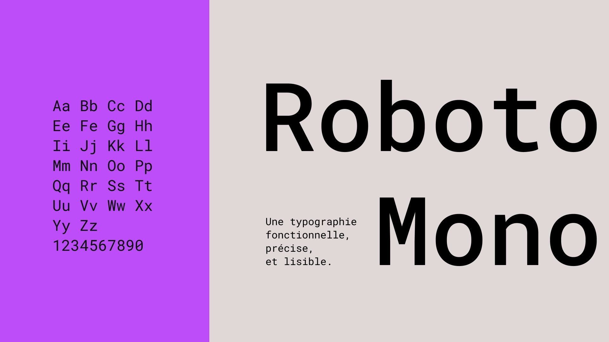
- FD5003
RGB 253 80 3 - BD4DF9
RGB 189 77 249 - 4AED88
RGB 74 237 136 - E0D8D6
RGB 224 216 214 - 121212
RGB 18 18 18 - FFFFFF
RGB 255 255 255
08 — 图形系统
由重叠弧线生成的一组符号，既能单独作为图案，也能变成图框去裁切演出照片。规范里定义了自由摆放和网格重复两种用法，以及标志的使用和禁用示例。
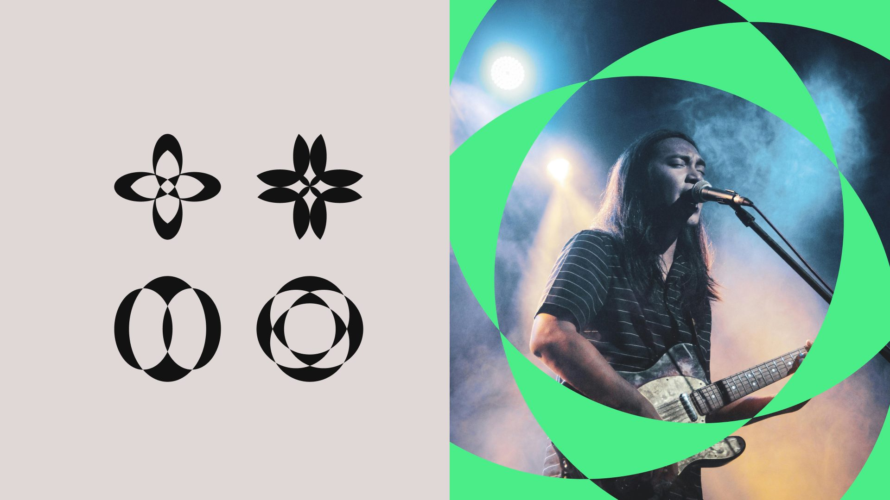
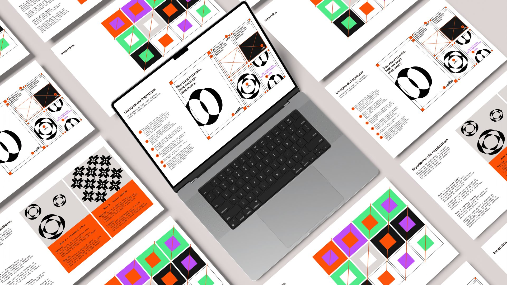
09 — 落地应用
以巴黎七月演出季为场景，把系统铺到每一个触点：宣传视觉、节目手册、艺人介绍、户外海报、门票、腕带和 App 图标。
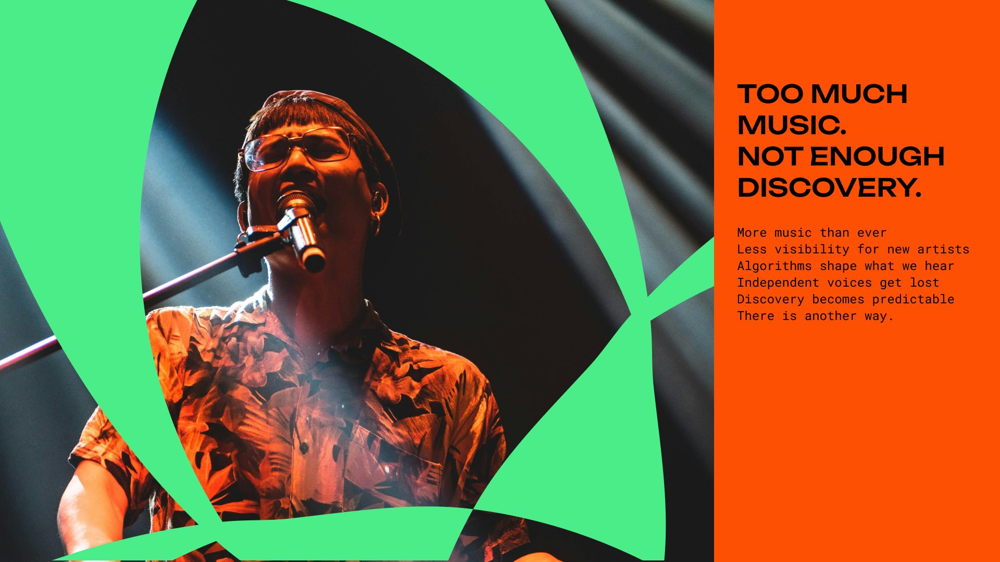
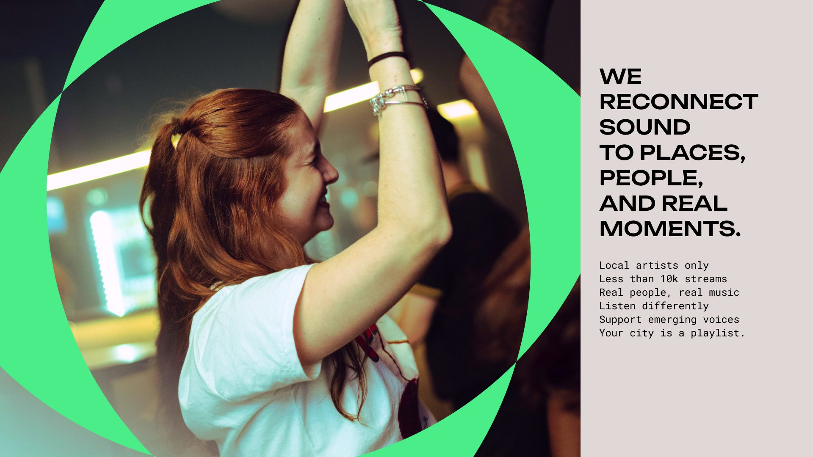
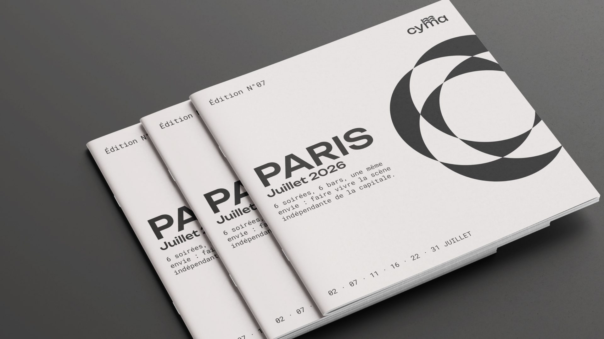
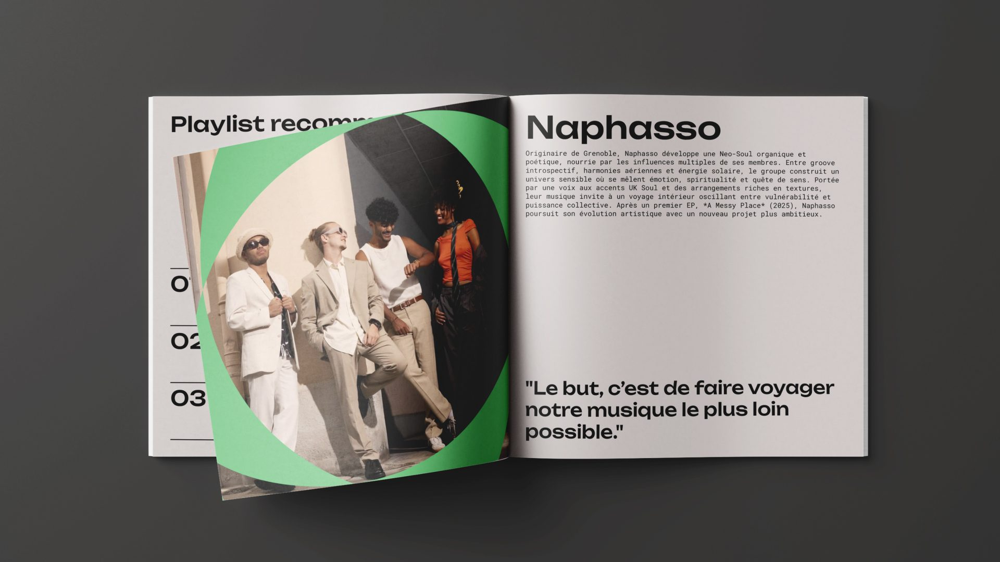
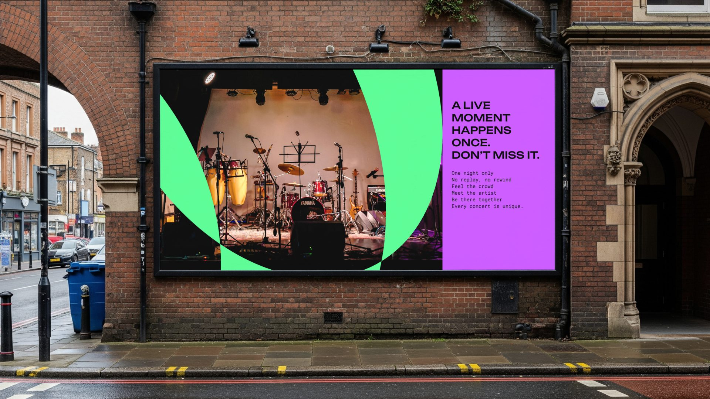
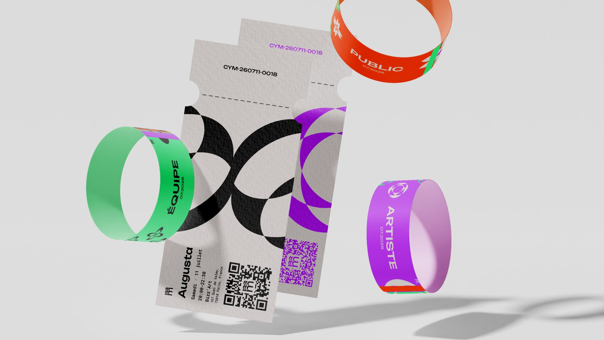
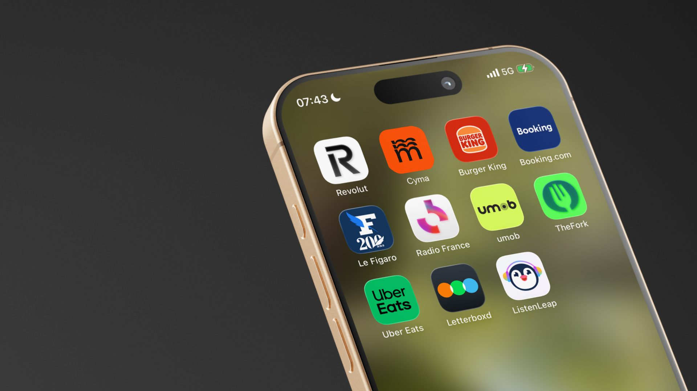
10 — 总结
下一步
找十位左右的听众测试原型，验证「按距离发现音乐人」是否真的能让人想去看一场演出。